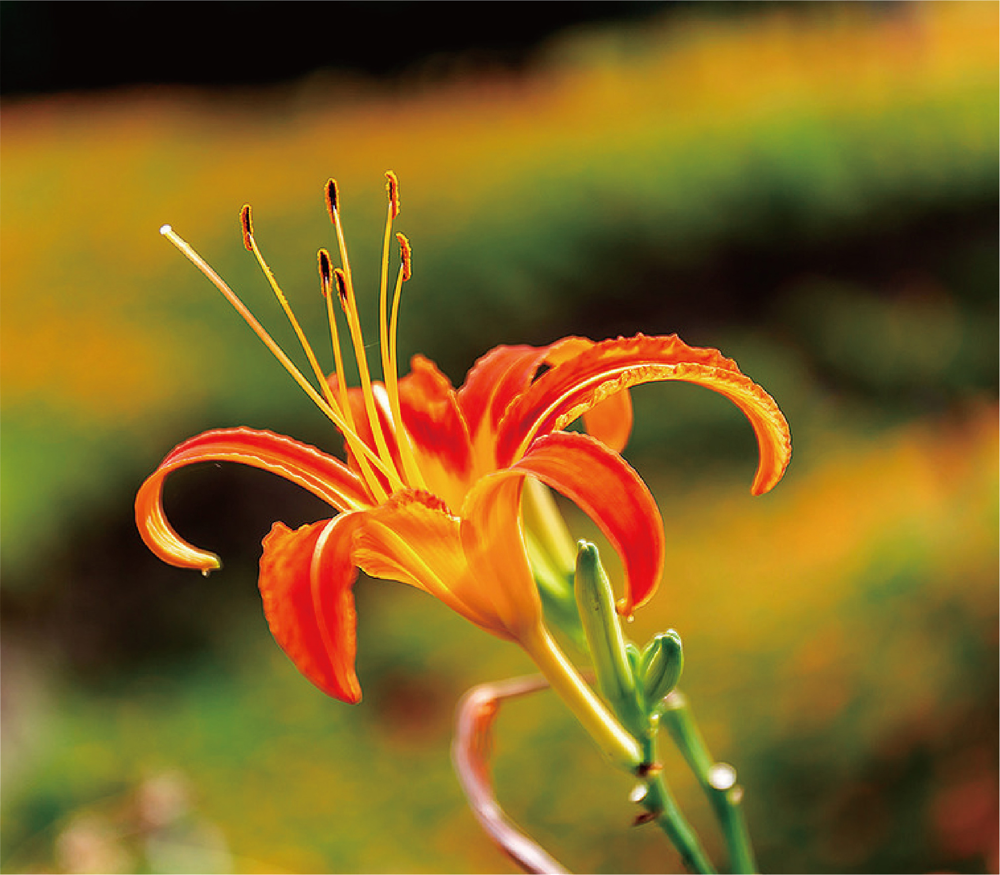
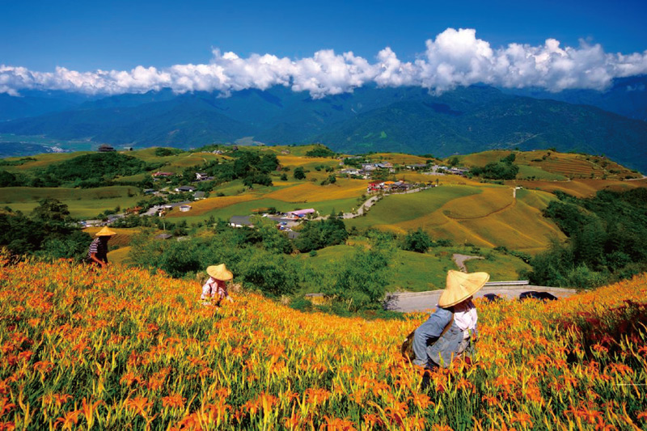
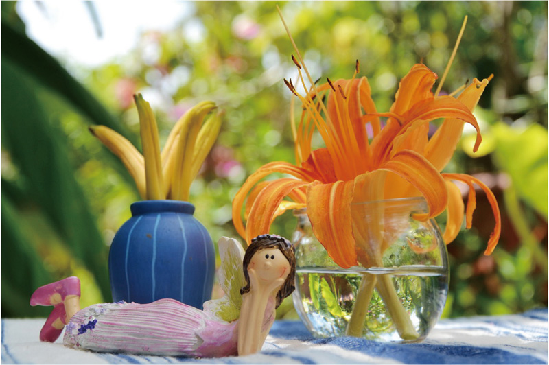

關於金針花
花期 : 每年三～五月
地區 : 花蓮縣玉里鎮赤柯山、富里鄉六十石山
赤柯山及六十石山當地的居民幾乎都是八七水災之後，由西部地區移居至花蓮， 這些被迫遷移家園的居民原本在山上種植地瓜、玉米、豆類等作物，在生活逐漸穩 定之後，還養殖了雞隻及豬隻並在收成後，以人力的方式運送下山販賣或換取日常用 品、白米等以糊口，直至居民們發現當地土壤、氣候相當適合種植金針，且金針在 收成後可以乾燥的方式保存，不僅在交通及路況不佳的當時有相當助益外，也有不 錯的收獲，所以開始大量種植金針，時至今日，赤柯山、六十石山在經過不斷的開 發、建設，成為現在民眾口中的東部美景。「金針花」又稱一日花、忘憂草，在每 年7~9月綻放，最初是花東地區農民賴以為生的農作物，由於成熟的花苞只有一天 的採收期，開了花之後無法製成食用金針，失去了經濟價值，所以來不及採收而開 花的金針花，成為大片美麗的金針花海，但對於赤柯山的居民來說，金針花並不是 基於觀賞的理由而栽種，而是來不及採收的遺憾，但也因為如此，帶動了這兩個地 區的觀光發展。
六十石山的由來
位於後山花蓮最南端的富里鄉，海拔高度約八百至一千公尺，在日 據時代原為一處盛產樟樹的茂密山林，由於當時建設東部鐵路需大 量枕木，而樟樹可製成樟腦的經濟價值，讓這個茂密的樟樹林殘留 下的是一片的光禿，「六十石山」這個名稱的由來眾說紛紜，有一 說是因早年當地每甲地可種植約6000斤(60石)稻榖而得名，念法也 有所不同，有人唸作「六十石(ㄕˊ)山」、亦可稱為「六十石(ㄉㄢˋ)山」， 但正確的由來及唸法，已不得而知。


花蓮金針花季
當地政府自民國八十九年開始，陸續在赤柯山及六十石山這二個 金針產區發展休閒農業，並輔導及培訓農民，如何經營民宿以及解說 的技巧，在當地居民親自整理、改善金針產區的環境之後，使得這兩 個地方成為低度開發且以環境復育為導向的觀光勝地，花蓮地區 的年度賞花活動「花蓮金針花季」，也因此展開，每年七月至九月是 金針盛產期，除了美麗的金針花海景觀之外，前往花蓮旅遊也可進行 夜間生態觀察、觀星以及品嚐金針風味餐等，而當地相關旅遊業者， 也會配合金針花季，推出採金針體驗、賞鯨、泛舟等相關活動遊程。
花蓮金針花季交通管制
為紓解賞花民眾塞車之苦，每年之金針花季均實施交通管制，富里 鄉六十石山於花季期間，每日早上八點至下午五點，於六十石山金 針園區規劃單行環繞園區動線，並採上下山分流制，由竹田方向上 山，東里阿眉溪方向下山，並全線禁止甲、乙類客車行駛上山，僅 開放九人座小巴、自小客車及機車上山；玉里鎮赤科山(赤柯山)則 於金針花季期間每日早上七點半至下午五點除禁行大客車外，其餘 並無特殊管制。
